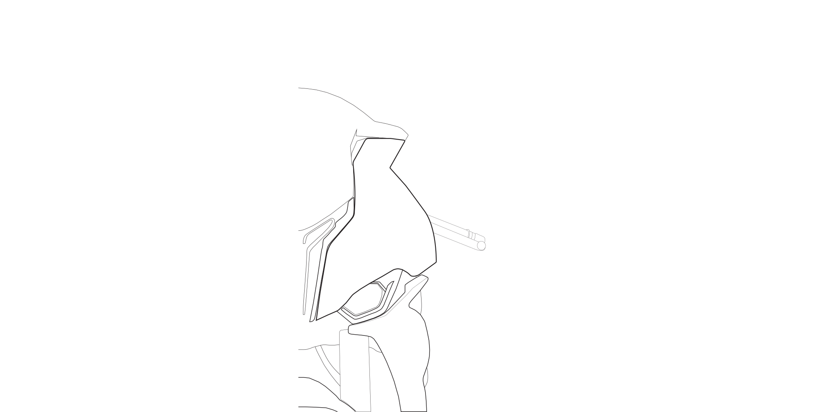

Through these activities, I learned how to embed graphics, vector artwork, and videos into my webpage using HTML. I took graphic art classes in high school and now in college, so I am quite familiar with vector vs. raster artwork. Using Illustrator and Photoshop for this assignment felt familiar, and learning how to embed everything on a website is a useful skill for a future UX designer. Combining my interest in coding with graphic design is exciting because it matters to user experience. Learning how to make websites interesting beyond CSS styling adds elements that make a website more appealing and increases user engagement and retention. As a future user experience designer, I need to learn and understand these skills to develop interesting, unique websites. The more I learn about web development, the more I can see myself using these skills to my advantage in the future. I still have a lot to learn, but it is exciting to get started.